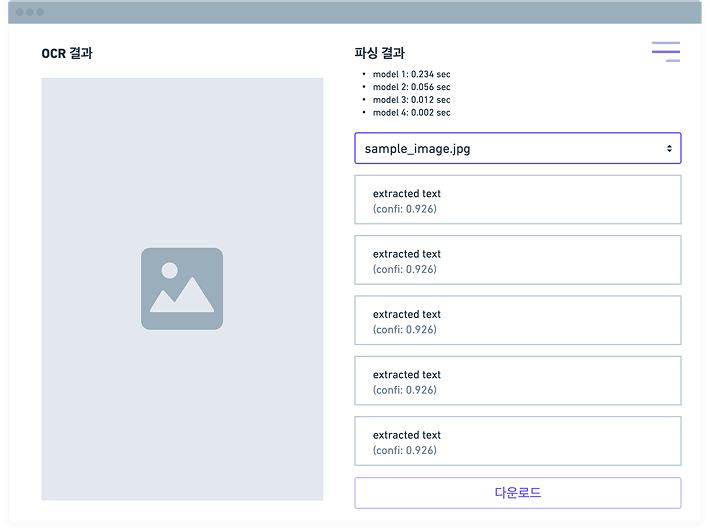
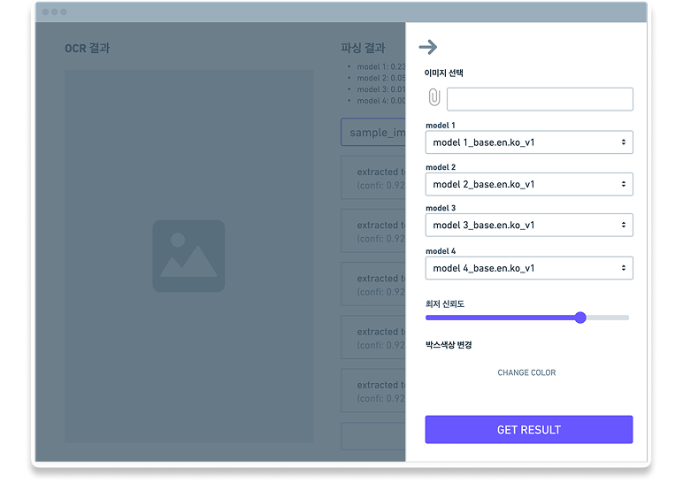
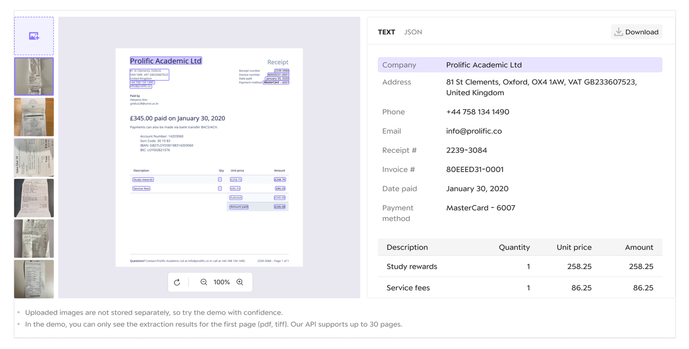

Self-Serve Product Funnel Design
IDP API Demo: Turning a CLI-Only Product into a Self-Serve GUI Funnel
Redesigning an internal QA tool into a public, self-serve demo that funnels homepage visitors directly into product trial and signup.
Overview
Upstage's Intelligent Document Processing (IDP) OCR API had no GUI of its own — the only demo tool that existed was built for internal model QA, and every prospective customer had to go through a manual, multi-step process just to try it. I redesigned that internal tool into a public, self-serve demo embedded directly on the homepage, removing the login/token-issuance steps entirely, based on interviews with both internal stakeholders and real API customers. The redesigned demo drove homepage visitors directly into product trial and signup, and cut the customer-to-purchase process from 4 manual steps to 2.
Problem & Context
The product had recently pivoted from selling bespoke, GUI-based extraction software directly to financial/insurance clients (with low-code customization) to selling the same core OCR capability as a CLI-first API on a self-serve SaaS platform — a shift from white-glove, one-on-one delivery to broad, self-service adoption. The only existing demo tool, however, had been built purely for internal model QA, not for this new self-serve audience:
- Exposed technical parameters (model version selectors, confidence thresholds, box-color settings) and internal jargon (e.g., "파싱"/parsing) that meant nothing to an evaluating customer
- Access required a manual request-to-CX-then-token-issuance flow — a process built for a small number of high-touch leads, not for a product now trying to let anyone try it in seconds
Process & Approach
Conducted in-depth interviews (~40 minutes each, with a CX manager present) with three internal stakeholder teams — Biz (frontline promotion and demo operation), Ops (customer inquiries and token issuance), and Marketing (customer analysis and demo guide creation) — to map the existing demo-delivery process and its pain points. A separate wireframe teardown of the existing internal demo's UX pinpointed three concrete usability failures:
- Unintuitive internal-QA terminology and interface
- A core "upload image" action that was hidden and hard to find, despite being the single most support-requested step
- A configuration-heavy flow — four model-version selectors, a minimum-confidence slider, box-color settings — that forced users through detailed setup before they could see a single result
This was complemented by an interview with an actual API customer — a Closed Beta Test customer, "Company I," who used the API's OCR to extract text from images for SEO-optimizing job postings — to understand real purchase-evaluation behavior:
- Customers benchmark competing APIs' performance before buying, sometimes starting on a free tool (e.g., KakaoTalk's API) before switching to a paid plan as automation needs grow
- Purchase decisions involve non-developer stakeholders (PMs, designers) as much as engineers
- Some customers reverse-engineer new use cases — such as a masking feature built from OCR-based coordinate data — directly from raw API response data
Synthesizing all three inputs into a purpose-to-strategy map redefined the target user from "customers with active purchase intent" to "anyone with interest," collapsing the funnel from a manual 3-step, CX-gated flow ("homepage → token issuance/login → demo") into a 1-step self-serve flow ("homepage demo, no login or token required").


Solution & Design
Redesigned the demo around extraction-result visualization instead of internal QA controls — including an image viewer with zoom/rotate designed for the demo's small embedded footprint rather than a full screen. Embedded the redesigned demo directly on the product homepage with CTA buttons, a free-trial popup, and platform links funneling visitors into SaaS console signup, paired with a free-credit incentive (30,000 KRW of OCR credits for new Upstage Console signups) to convert first-time trial into an active account.
- Model version selectors, confidence thresholds, box-color settings
- Internal QA jargon (e.g., "파싱"/parsing)
- "Upload image" hidden and hard to find
- Manual CX request & token issuance to access
- Example-image gallery for context and use-case ideas
- Zoom/rotate image viewer for side-by-side comparison
- Text/JSON results toggle with one-click download
- Embedded on homepage — no login or token required

Impact & Outcome
40.47% of homepage visitors who reached the demo uploaded an image to try it, confirming strong interest in hands-on evaluation over passive browsing. Of the visitors who engaged with the demo, each funnel exit point converted at a meaningfully high rate:
On the sales side, collapsing the manual CX-assignment and back-and-forth negotiation process into a self-serve "try → check pricing → buy" flow reduced the customer-to-purchase process from 4 steps to 2, cutting up to 2 weeks off the time from first contact to signed usage.
Reflection
As the first person to own this API product's demo experience, I initially underweighted the need for a GUI at all — the primary user of an API is a developer, and developers can just call the endpoint directly. The interviews corrected that assumption: developers used the GUI demo to visually sanity-check model quality before writing code, and non-technical stakeholders used it to build internal buy-in for the purchase. This project also reinforced the value of shipping in short, scoped cycles (core functionality first, then visual polish, then marketing/branding) once cross-team scope started growing mid-project, to protect the delivery timeline without cutting quality.